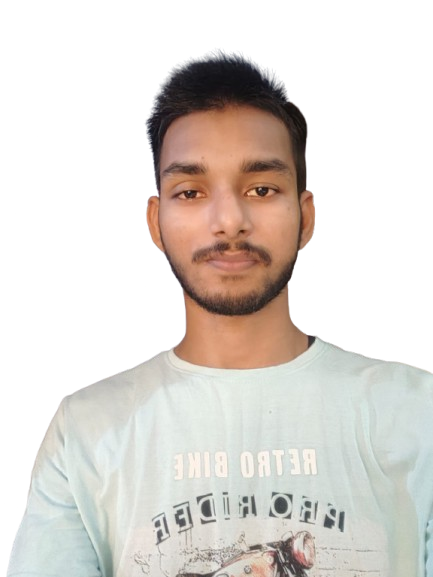

Anurag Singh
Artificial Intelligence Engineer, Eduspheria

Hi, I am 22 years old, currently in 4th year (Graduating 2027),
pursuing a carrier in Computer Science and Engineering from SMVD University, J&k, India.
Born and brought up in Ayodhya, India.
I have done my schooling in Shyam Sundar Saraswati Vidyalaya Inter College in 2021, with Science + Computers as my background.
My idea behind taking up Computer Science & Engineering is my love for automation and the fact that, given the knowledge, I can make a computer do almost anything I want it to do.
I have a keen interest in the field of Machine Learning, Data Science and Natural Language Processing, and I'm presently learning and working on the skills required to expertise in the same.
I am a firm believer of passion and determination can lead you to success.